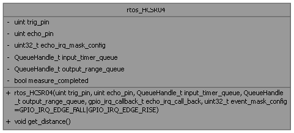

- Generated by
 1.16.1
1.16.1
class for the ultrasonic ranging module HC-SR04 compliant with FreeRTOS More...
#include <rtos_hc_sr04.h>

Public Member Functions | |
| rtos_HCSR04 (uint trig_pin, uint echo_pin, QueueHandle_t input_timer_queue, QueueHandle_t output_range_queue, gpio_irq_callback_t echo_irq_call_back, uint32_t event_mask_config=GPIO_IRQ_EDGE_FALL|GPIO_IRQ_EDGE_RISE) | |
| Construct a new rtos_HCSR04 object. | |
| void | get_distance () |
| request a measure from HCSR04 | |
class for the ultrasonic ranging module HC-SR04 compliant with FreeRTOS
| rtos_HCSR04::rtos_HCSR04 | ( | uint | trig_pin, |
| uint | echo_pin, | ||
| QueueHandle_t | input_timer_queue, | ||
| QueueHandle_t | output_range_queue, | ||
| gpio_irq_callback_t | echo_irq_call_back, | ||
| uint32_t | event_mask_config = GPIO_IRQ_EDGE_FALL | GPIO_IRQ_EDGE_RISE ) |
Construct a new rtos_HCSR04 object.
| trig_pin | the pin attached to the triggering signal |
| echo_pin | the pin used to measure round-trip time of ultrasonic pulses |
| input_timer_queue | the input queue that receives data from IRQ |
| output_range_queue | the output queue that receives computed range |
| echo_irq_call_back | The ISR (interrupt Service Routine) that process IRQ event |
| event_mask_config | the rising/falling edge configuratio of the irq |